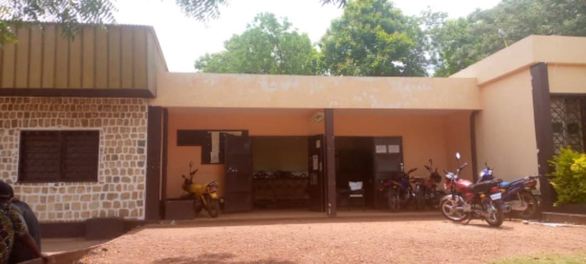

CAMPUS · BIBLIOTHÈQUE UNIVERSITAIRE
Université de Bangui
Un lieu de travail et de recherche au cœur de la vie universitaire centrafricaine.
LE GOÛT DE LA DÉCOUVERTE
Poussez les portes des bibliothèques de Bangui. Des lieux de savoir, de rencontre et d’imagination, à découvrir ici.
Découvrir les bibliothèques ↓
UN ESPACE POUR TOUS
La lecture ouvre des portes. Entrons ensemble.
Des bibliothèques universitaires aux médiathèques culturelles, découvrez les lieux et les ressources qui font vivre la lecture à Bangui.
À BANGUI
CAMPUS · BIBLIOTHÈQUE UNIVERSITAIRE
Un lieu de travail et de recherche au cœur de la vie universitaire centrafricaine.
CAMPUS · RENCONTRE
Une visite et des échanges autour du fonds documentaire universitaire.
MÉDIATHÈQUE · ALLIANCE FRANÇAISE
Un espace vivant autour des livres, des langues et de la culture.
MÉDIATHÈQUE · ALLIANCE FRANÇAISE
Des rayonnages à parcourir, des histoires à emporter avec soi.
INSPIRATION · IMAGE ILLUSTRATIVE
Une image d’ambiance pour célébrer les lieux de lecture de la ville.
INSPIRATION · IMAGE ILLUSTRATIVE
Ambiance de bibliothèque en illustration, en attendant d’autres photos locales.
Aucun lieu ne correspond à votre recherche.
PLUS QU’UN LIVRE
Une bibliothèque, c’est une porte ouverte sur le monde. Prenez le temps de découvrir les lieux de lecture de Bangui et de vous renseigner directement auprès d’eux.
Trouver une ressource →POUR ALLER PLUS LOIN
Une sélection de bibliothèques numériques et de sites à explorer.